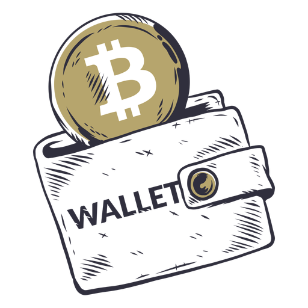

La criptomoneda, también llamada moneda virtual o criptodivisa, es dinero digital. Eso significa que no hay monedas ni billetes físicos — todo es en línea. Usted puede transferirle una criptomoneda a alguien en internet sin un intermediario, como un banco. Las criptomonedas más conocidas son Bitcoin y Ether, pero se continúan creando nuevas cripto-monedas.
La gente podría usar criptomonedas para hacer pagos rápidos y para evitar los cargos de transacción. Algunas personas podrían adquirir criptomonedas como una inversión, con la esperanza de que aumente su valor. Las cripto-monedas se pueden comprar con una tarjeta de crédito o, en algunos casos, a través de un proceso llamado “minería”. Las criptomonedas se almacenan en un monedero o cartera digital, ya sea en línea, en su computadora o en otro soporte físico.
Antes de comprar una criptomoneda, tiene que saber que no tiene las mismas protecciones que cuando usa dólares estadounidenses. También tiene que saber que los estafadores le están pidiendo a la gente que le paguen con una criptomoneda porque saben que, por lo general, esos pagos son irreversibles.
Se trata de una forma sencilla de invertir: se compran criptomonedas que se están valorizando en el mercado, es decir, cuyo precio está subiendo, para luego mantener el dinero quieto en el monedero durante mucho tiempo, hasta que doble o triplique su valor inicial. Después, se vende y así se obtienen buenas ganancias.
Hoy en dia la mejor cripto para invertir es solana, Ha superado a Ethereum en la mayoría de las métricas. Uniswap – Mejor portafolio de criptomonedas de inversión DEX a largo plazo. XRP – Excelente criptoinversión a largo plazo que desafía a SWIFT. Bitcoin-La mejor criptomoneda para mantener una reserva de valor a largo plazo.
